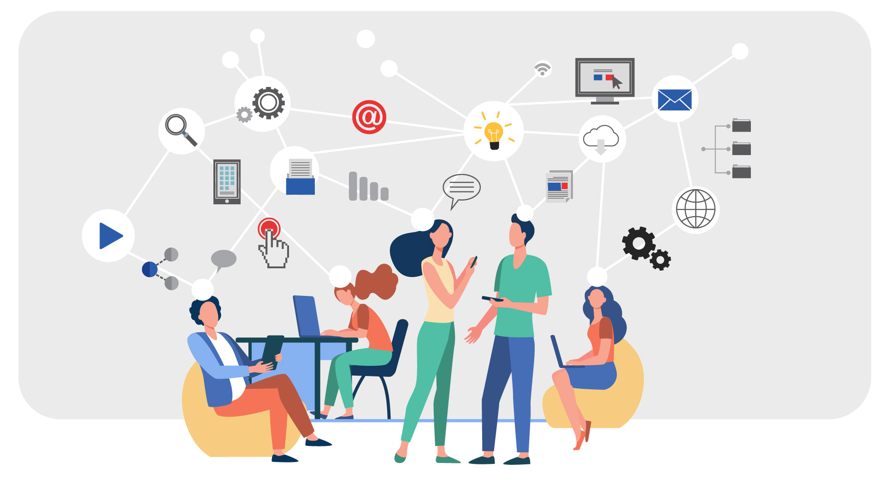

É preciso, portanto, recontextualizar os saberes em situações em que estes saberes tinham sentido, em que os atores tinham objetivos, problemas a resolver, agindo segundo determinados padrões ou diante de incertezas, em meio a relações de poder, etc. Cescon lembra que:
Em destaque, um retângulo vermelho com contorno azul, texto em letras brancas, grandes aspas, no canto superior esquerdo e inferior direito.
"Hendricks (2001) propõe que, partindo da visão situada, os educandos deveriam aprender envolvendo-se no mesmo tipo de atividades que os especialistas enfrentam em diferentes campos do conhecimento. Paradoxalmente, na cultura escolarizada com frequência procura-se criar práticas ou atividades científico-sociais semelhantes às realizadas pelos especialistas e pretende-se que os alunos pensem ou atuem como matemáticos, biólogos, historiadores, etc. Entretanto, o ensino não acontece em contextos significativos, não se enfrenta problemas nem situações reais, nem se promove a reflexão na ação, nem se ensina estratégias adaptativas e extrapoláveis. O conhecimento do especialista, diferentemente do possuído pelo novato, não difere somente na quantidade ou profundidade da informação, mas em sua qualidade, já que é um conhecimento profissional dinâmico, autorregulado, reflexivo e estratégico" (CESCON, 2016, p. 39).
Para compreender um pouco mais a relação entre a Educação Profissional e Comunidades de práticas, ouça o podcast a seguir:


Depois de ter ouvido o podcast, você deve estar refletindo sobre os ensinamentos a retirar da teoria das Comunidades de Prática, não é mesmo?!
Como pode ser pensada a aprendizagem a partir das CoPs?

-
More
Aprender é, no fundo, construir e transformar identidades. A aprendizagem tem a ver com o que você está se tornando. Aprender uma profissão é transformar profundamente a sua identidade, é um tornar-se.
Close -
More
Este aprender como transformação identitária acontece: na experiência de si mesmo, em uma experiência negociada com os outros, na trajetória de aprendizado, no sentir-se parte de algo. Identidade aqui não é restrita. Podemos ter múltiplos pertencimentos e integrar diversas Cops...
Close -
More
Para promover esta aprendizagem deve-se criar para o aprendiz oportunidades de engajamento na prática (aquele rico conjunto de atividades compartilhadas de que falamos acima).
Close -
More
A comunidade torna-se um “currículo vivo” para o aprendiz (e pode ser também para o professor).
Close
Figura 14 - Fonte: Imagem produzida pela equipe gráfica do projeto